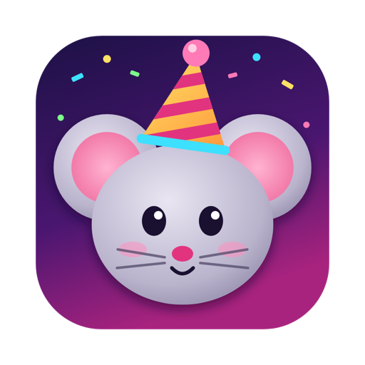
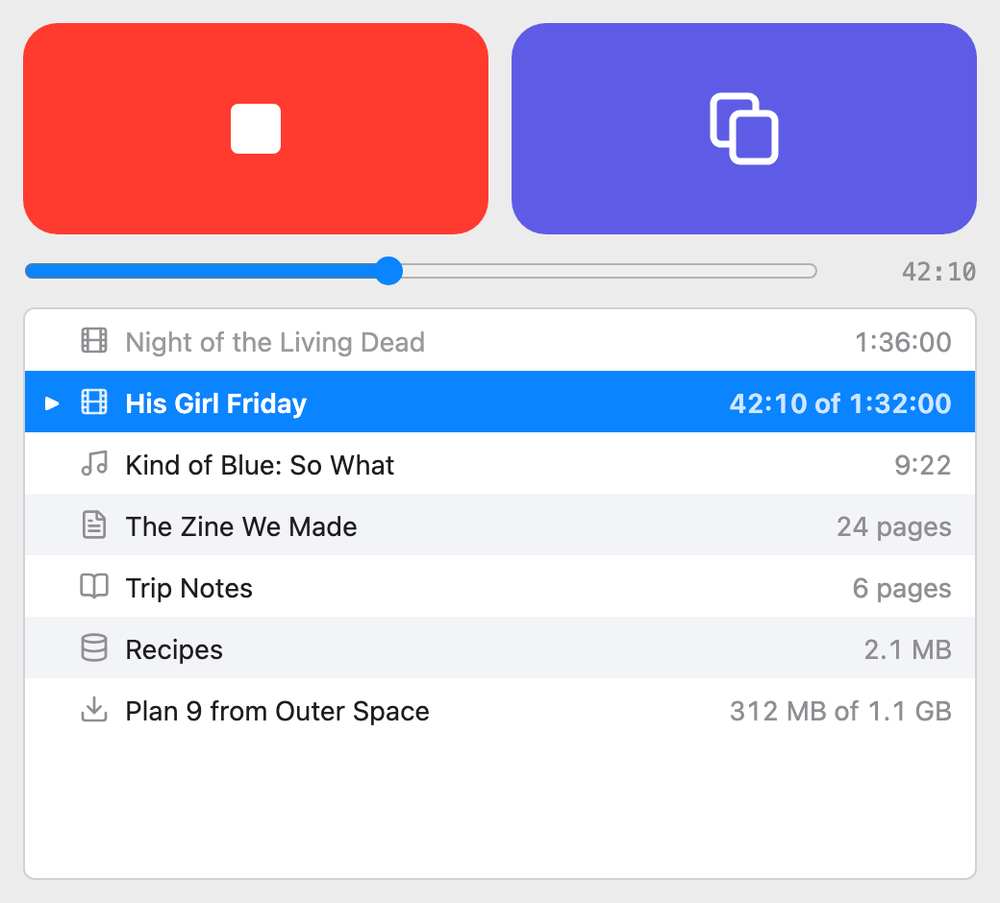
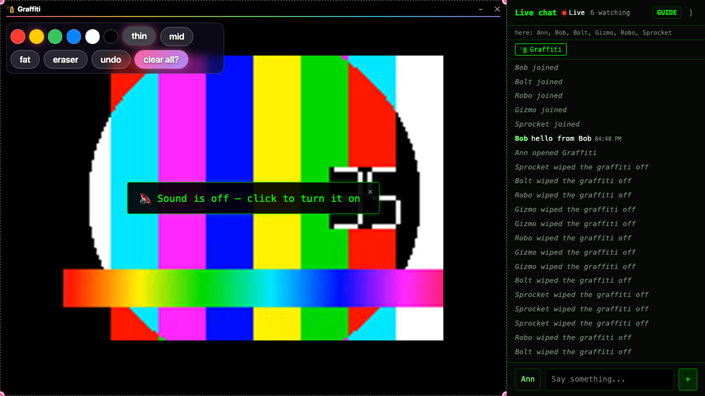
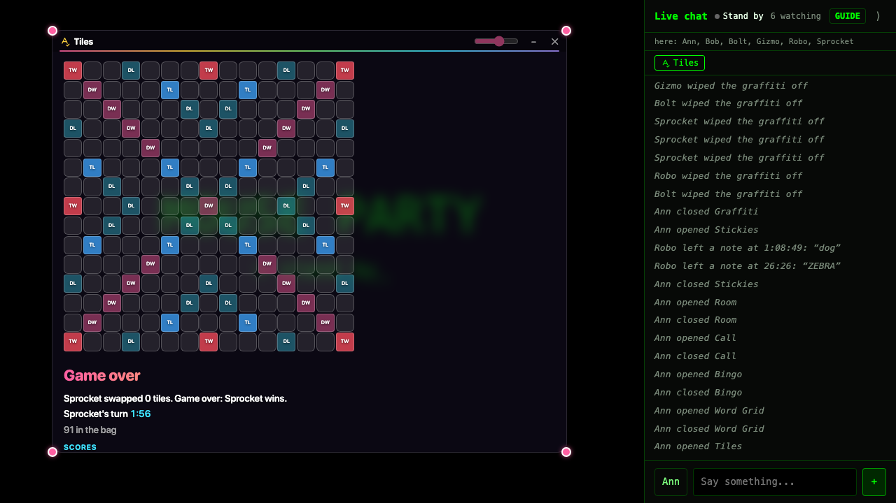

Mouse Party
Have friends over, online: a movie on, chat beside it, and games on the table. It all runs from your own Mac, and it's gone when you quit.
The newest release, as a disk image. For Apple Silicon Macs on macOS 13 or later. Open it and drag Mouse Party to Applications; from then on it updates itself. Until releases are signed, macOS will say it can't verify the app the first time: System Settings > Privacy & Security > Open Anyway.
Drag some movies into the window and press Play. Press the other button, and a link is on your clipboard. Paste it into the group chat. Your friends open it in a browser, on a laptop or a phone, and the movie is playing, with a chat beside it. Nobody installs anything or makes an account.

There is no server
Your Mac is the server, for as long as the app is open. The video goes from your Mac straight to each friend. The link comes from a Cloudflare tunnel, which needs no account, so it works from anywhere without touching your router's settings.
When you quit, the link stops working, and the chat and the list of who came are gone. They were only ever in memory. What stays on your Mac is your list of movies, your settings, and the few things the games keep, such as the graffiti wall. All of that is in one file, which you can lock with a passcode or erase from the menu.
More than movies
It plays anything ffmpeg can read, with subtitles. Music gets its cover art and a quiet picture of the sound. A PDF, a Word file or a deck of slides is read together, everyone on the same page, with anyone able to turn it. A SQLite database is looked through together with Datasette. You can also paste a download link, and the movie starts playing while it's still coming down.

Games on the table
Anyone watching can open a game or a toy for everyone, as a window over the movie, which keeps playing behind it. There's Bingo with words from the movie's own subtitles, a crossword tile game, Sketch, Anagrams, Word Grid, Blanks, Spies and Werewolf. There are polls, sticky notes that reappear at the same moment next time, graffiti drawn right on the picture, shared documents and spreadsheets, and a voice call for talking over the film. They're simple, and there to be played with.

If a guest isn't a friend
The link is an invitation, and whoever holds it can talk to your Mac. So everything a guest's browser can reach runs inside macOS sandboxes. The part that serves the page and the chat can't open a file in your home folder, start a program, or reach anything else on your Mac or your network. Someone who found a hole in it would have the party, and not your computer. This narrows what a break-in could get. It doesn't promise there are no holes.
No guarantees
Mouse Party is one person's project, given away. It comes as it is, with no warranty of any kind and no promise of support. It opens your Mac to whoever has the link, on purpose. Use it at your own risk, share the link with people you know, and quit when the party's over.
Open source
The code is on GitHub under the MIT licence: read it, change it, build your own. The download also carries other people's programs under their own licences, among them ffmpeg and pandoc, which are GPL; every one is listed, and each release includes their sources. The README says how everything works and how to build it, and Releases has every version.